정보통신기사(구) (2007-09-02 기출문제)
1과목: 디지털 전자회로
1. 다음 논리회로의 출력(Y)은?
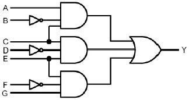
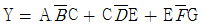
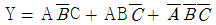
- Y = A+B+C+D+E+F+G
- Y = ABCDEFG
(정답률: 알수없음)

2. 그림과 같은 이상적인 연산 증폭기의 전압 증폭도는? (단, R1=1[㏁], R2=2[㏁]이다.)
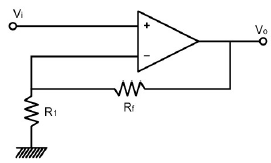
- 1
- 2
- 3
- 5
(정답률: 42%)
3. 6개의 플리플롭으로 구성된 상향계수기(upcounter)의 모듈러스와 이 계수기로 계수할 수 있는 최대계수는?
- 모듈러스 : 5, 최대계수 : 63
- 모듈러스 : 6, 최대계수 : 64
- 모듈러스 : 63, 최대계수 : 64
- 모듈러스 : 64, 최대계수 : 63
(정답률: 알수없음)
4. 직렬전압 궤환증폭기의 입력 임피던스는 궤환이 없을 때와 비교하면 어떠한가.?
- 감소한다.
- 증가한다.
- 변함없다.
- 증가하다 감소한다.
(정답률: 알수없음)
5. 그림과 같은 스위칭 트리거 회로에서 SW를 OFF 시킬 때 C 에 충전시 시정수는 몇 ㎳ 인가? (단, R1 = 100Ω, R2 = 10㏀, C = 3.3㎌, IC의 입력임피던스는 무한대라 가정한다.)
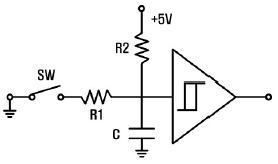
- 0.33
- 3.3
- 33
- 330
(정답률: 알수없음)
6. 다음과 같은 정 논리회로의 게이트 기능은?
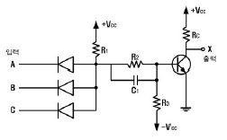
- NOR
- NOT
- NAND
- AND
(정답률: 알수없음)
7. 그림과 같은 트랜지스터 바이어스 회로에서 Re 의 값이 매우 커서 Rb/Re 값이 0에 접근하 때 안정도 S는 어떤 값에 가까워 지는가?
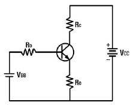
- 0
- 1
- β
- ∞
(정답률: 알수없음)
8. 다음 중 저임피던스 부하에서 고전류이득을 얻으려 할 때 사용되는 증폭 방식으로 가장 적합한 것은?
- 베이스 접지
- 컬렉터 접지
- 이미터 접지
- C급 증폭
(정답률: 34%)
9. 다음 이상적인 연산증폭기의 출력 Vo[V]는? (단, V1 = 10[V], V2 = 10.5[V])
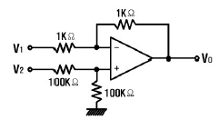
- 10
- 5.2
- 1.4
- 0.5
(정답률: 알수없음)
10. 저항이 2[㏁] 이고, 콘덴서 1[㎌] 인 회로에서 출력전압 Vo 에 대한 식은?
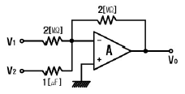
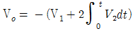
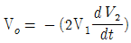
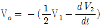
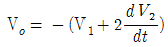
(정답률: 알수없음)
11. 불 대수식
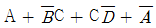
를 간단히 할 경우 옳은 것은?- 1
- A
- B
- C
(정답률: 알수없음)
12. 다음 회로에서 점선안의 회로를 부착해서 얻어지는 효과로 적합하지 않는 것은?
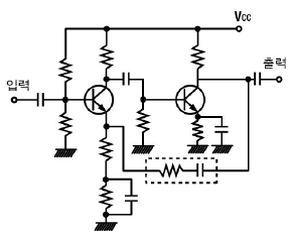
- 증폭기의 대역폭을 넓힌다.
- 전압이득이 감소된다.
- 비직선 왜곡이 감소된다.
- 출력 임피던스가 증가한다.
(정답률: 알수없음)
13. 다음 중 바이어스 전압에 따라 공간 전하용량이 달라지는 다이오드는?
- Zener Diode
- LCD
- Tunnel Diode
- Varactor Diode
(정답률: 알수없음)
14. 반송파와 변조파 주파수가 각각 일정한 경우, 다음의 각 변조지수로 FM 변조를 할 때 가장 양호한 신호대 잡음비를 기대할 수 있는 경우는?
- 0.4
- 0.5
- 1.0
- 5.0
(정답률: 알수없음)
15. 다음과 같은 단안정 멀티바이브레이터의 출력(Vo)의 펄스폭 τ[sec]은?
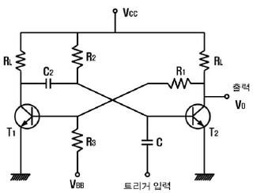
- τ = C2R2 In 10
- τ = R1R2 In 2
- τ = C2R2 In 2
- τ = C2R1 In 10
(정답률: 알수없음)
16. 멀티바이브레이터의 단안정, 비안정, 쌍안정 동작은 무엇에 의해 결정되는가?
- 결합회로의 구성
- 전원전압의 크기
- 바이어스 전압의 크기
- 전원전류의 크기
(정답률: 알수없음)
17. 다음 중 카르노도를 간략화 한 결과는?
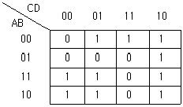
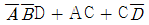
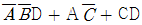
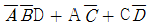
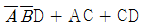
(정답률: 40%)
18. 발진기의 출력 주파수가 인가되는 전압의 크기에 따라 변하는 발진기는?
- Hartley
- VCO
- Colpitts
- X-Tal
(정답률: 알수없음)
19. 다음 그림에서 전달 함수
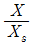
는?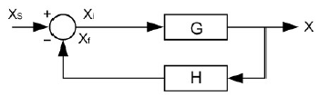
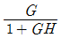
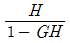
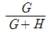
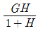
(정답률: 알수없음)
20. 1024개의 입력 펄스가 들어올 때마다 한 개의 출력 펄스를 발생시키려고 한다. T 플리플롭을 이용할 경우 몇 개가 필요한가?
- 4
- 6
- 8
- 10
(정답률: 알수없음)
2과목: 정보통신 시스템
21. 다음 네트워크 토폴로지 중 CATV 기술을 이용한 광대역 LAN에서 주로 사용되는 것은?
- Star형
- Tree형
- Ring형
- Mesh형
(정답률: 알수없음)
22. 다음 중 패킷형태 단말과 패킷교환망간의 제어절차를 규정한 것은?
- V.24
- X.21
- X.25
- X.400
(정답률: 100%)
23. 통신전송로의 요구되는 특성이나 조건과 가장 거리가 먼 것은?
- 저손실성
- 접속의 임의성
- 고신뢰성
- 광대역성
(정답률: 64%)
24. HDLC 전송제어 절차에서 프레임의 구조로서 잘못 나타낸 것은?
- 시작 플래그 : 8비트
- 주소 : 8비트(확장 가능)
- FCS : 8비트
- 종결 플래그 : 8비트
(정답률: 알수없음)
25. 디지털 계위(Hierarchy) 구성으로 옳은 것은?
- 북미방식의 24ch, 1.544[Mbit/s]를 기준
- 북미방식의 30ch, 2.048[Mbit/s]를 기준
- 유럽방식의 24ch, 2.048[Mbit/s]를 기준
- 유럽방식의 30ch, 1.544[Mbit/s]를 기준
(정답률: 알수없음)
26. 이더넷(Ethernet) LAN에 적용되는 매체 액세스 제어 프로토콜 방식은?
- Token Ring
- CSMA/CD
- CDMA/CD
- FDDI
(정답률: 40%)
27. 다음 중 데이터 전송에 융통성이 있고 메시지가 짧은 경우에 가장 유리한 방식은?
- 회선 교환방식
- 데이터그램 패킷교환방식
- 메시지 교환방식
- 가상회선 패킷교환방식
(정답률: 알수없음)
28. CRC(Cyclic Redundancy Check)방식에 대한 설명으로 틀린것은?
- 문자단위 전송에서 응용하기 적합하다.
- 패리티 검사코드의 일종인 순환코드를 이용한다.
- 집단성 에러도 검출이 가능하다.
- CRC-12, CRC-16 등의 생성 다항식을 사용한다.
(정답률: 알수없음)
29. 비트(bit)방식 전송 프로토콜에 속하지 않는 것은?
- BSC
- SDLC
- HDLC
- LAP-B
(정답률: 알수없음)
30. 가상단말(Virtual Terminal)의 설명 중 틀린 것은?
- 실제단말의 기능을 추상화, 일반화하여 정의한 표준 기능을 갖는 단말이다.
- 이기종간 통신을 대상으로 하는 OSI에 적용된다.
- 가상단말 기능은 일종을 프로토콜 서비스이다.
- 세션계층 프로토콜에서 채용되고 있다.
(정답률: 알수없음)
31. 광통신시스템에서 파장분할 다중화방식(WDM)을 사용하는 가장 큰 장점은?
- 전송거리가 길어진다.
- 전송용량을 크게 할 수 있다.
- 광수신기의 특성이 좋아진다.
- 전송손실이 감소한다.
(정답률: 알수없음)
32. 50개국을 망형으로 구성할 경우 필요한 중계 회선수는?
- 25
- 49
- 1200
- 1225
(정답률: 64%)
33. 정보통신을 위한 펄스변조방식에 해당되지 않는 것은?
- DM
- PCM
- ADPCM
- FM
(정답률: 알수없음)
34. 9600[baud]를 갖는 모뎀에서 2개의 비트가 1개의 신호로 변조되었을 때 초당 전송속도[bps]는?
- 19200
- 4800
- 9600
- 2400
(정답률: 알수없음)
35. 다음 중 데이터링크 계층가지의 기능을 수행하는 동종의 네트워크를 연결하는데 이용되는 것은?
- Bridge
- Repeater
- Router
- Brouter
(정답률: 알수없음)
36. B-ISDN 서비스 유형 B를 지원하며 가변비트율(VBR)의 연결형 패킷 영상 및 패킷 오디오 서비스에 적합하게 개발된 ATM 적응계층(AAL) 프로토콜은?
- AAL-1
- AAl-2
- AAL-4
- AAL-5
(정답률: 알수없음)
37. 광대역 ISDN의 설명으로 옳지 않은 것은?
- ATM 셀 전송에 기반을 둔 통계적 다중화 방식의 가상 채널을 사용한다.
- VPI는 정보전송을 위한 가상 경로 식별자이다.
- ATM 셀의 전체는 48 바이트이고 처음 5바이트는 헤더이다.
- 회선교환망과 패킷교환망의 장점을 갖는다.
(정답률: 알수없음)
38. 프로토콜의 기능 중 흐름제어에 대한 설명으로 옳은 것은?
- 연결 설정, 데이터 전송, 연결 해제의 기능
- 하나의 통신로를 다수의 가입자들이 동시에 사용하도록 하는 기능
- 송 ㆍ 수신하는 두 기기간의 처리속도에 따라 통신 속도를 조절하는 기능
- 통신개시에 앞서 데이터 링크를 설정하고 순서에 맞는 전달제어 및 오류제어를 설정하는 기능
(정답률: 알수없음)
39. 다음 중 FDDI 프로토콜은 OSI 계층의 어느 프로토콜과 관련되는가?
- 세선계층, 응용계층
- 물리계층, 데이터링크계층
- 전송계층, 네트워크계층
- 데이터링크계층, 전송계층
(정답률: 19%)
40. 다음 중 이동통신 채널의 특성 중 디지털 신호를 전송함에 있어 각각의 전파경로 길이가 다르므로 인해 수신기에 도달되는 시간이 달라 수신 데이터 간에 간섭을 일으키는 현상은?
- 지연 분산(Delay Spread)
- 인접채널 및 동일 채널 간섭현상
- 누화 현상
- 도플러 현상
(정답률: 알수없음)
3과목: 정보통신 기기
41. 데이터 전송을 위한 변복조에서 심벌 간의 간섭, 다경로확산, 첨가잡음 및 페이딩에 의한 왜곡이 생겨서 수신되는 경우가 있으므로 이를 보상하기 위한 것은?
- 대역여파기
- 디스크램블러
- 등화기
- 채너디코더
(정답률: 알수없음)
42. 디지털 교환기의 TS(Time Switch)의 구성으로 적합하지 않은 것은?
- 통화메모리
- 제어메모리
- 카운터
- 디코더
(정답률: 알수없음)
43. 다음 중 PC와 전화기 간에 인터넷 음성통신을 하기 위해 사용되는 것은?
- Telnet
- FTP
- IPv6
- VoIP
(정답률: 알수없음)
44. 통신제어 장치의 통신접속 기능으로서 분기회선에서 복수개의 단말이 1개의 통화회선을 공유하는 경우에 복수의 논리적인 통신회선을 설정하는 기능은?
- 통신방식제어
- 제어정보의 식별
- 다중접속제어
- 흐름 및 우선권 제어
(정답률: 54%)
45. CATV의 구성요소 중 수신안테나에서 수신한 각 채널의 방송신호를 중간 주파수대로 변환하여 조정한 수 VHF대로 재변환하여 중계전송망으로 송출하는 역할을 하는 것은?
- 헤드 엔드
- 중계 전송망
- 원격조정기
- 가입자 설비
(정답률: 알수없음)
46. 개인용 컴퓨터를 멀티미디어 단말기로 사용하기 위한 필수적인 요구사항과 관계가 적은 것은?
- CPU 등 고속 처리능력
- 대용량의 외부기억장치
- 영상정보의 고압축 기능
- 레이저 프린터 인터페이스 기능
(정답률: 알수없음)
47. 포트(port) 공동이용기에 대해 잘못 설명한 것은?
- 변복조기 공동이용기에 대체용으로 이용될 수 있다.
- 컴퓨터 포트의 비용을 절감한다.
- 컴퓨터와 모뎀사이에 설치한다.
- 단말기의 설치장소가 컴퓨터의 설치장소에 따라 제약을 받는다.
(정답률: 알수없음)
48. ISP(Internet Service Provider)에서 사용자 이름과 암호를 일괄 관리하기 위한 프로토콜은?
- DNS(Domain Name Server)
- PPP(Point To Point Protocol)
- RADIUS(Remote Authentication Dial-in User Server)
- SNMP(Simple Network Management Protocol)
(정답률: 알수없음)
49. 비디오텍스 통신시스템을 바르게 설명한 것은?
- 회화형 화상정보통신이다.
- 단방향성 정보전달 서비스이다.
- 전용통신망을 사용한다.
- 비디오폰과 유사한 가입자 전용 통화장치이다.
(정답률: 알수없음)
50. 전파전파의 경로 상 여러 요소의 영향 때문에, 수신전계강도에 시간적 강약의 변동이 발생하는 페이딩 wd에서 대류권파의 페이딩에 해당하는 것은?
- 편파성 페이딩
- 흡수성 페이딩
- 도약(Skip) 페이딩
- 신틸레이션 페이딩
(정답률: 알수없음)
51. 실제로 보낼 데이터가 있는 터미널에만 동적인 방식으로 각 부채널에 시간폭을 할당하는 방식이 아닌 것은?
- 지능 다중화기
- 비동기식 시분할 다중화기
- 역 다중화기
- 통계적 시분할 다중화기
(정답률: 알수없음)
52. 서비스 지역 내의 통화 용량을 증가시키기 위한 방법으로 틀린 것은?
- 기지국의 채널 증서
- 대기 이론의 적용
- 동적 주파수 할당
- 대규모 셀의 구성
(정답률: 알수없음)
53. 아날로그 전송과 비교하여 디지털 전송의 특징이 아닌것은?
- 원거리 전송시에 증폭기가 필요하다.
- PSDN을 이용하여 디지털 신호를 전송한다.
- 아날로그 전송보다 수십 ~ 수백배 이상의 빠른 전송 속도를 갖는다.
- 고품질의 전송서비스를 보장한다.
(정답률: 알수없음)
54. 특정자 상호간을 연결한 TV에 의한 통신 시스템으로 특정 대상에 대해 VTR 또는 자체 스튜디오를 통해 특정 프로그램을 제공하는 시스템은?
- HDTV
- CATV
- CCTV
- STV
(정답률: 알수없음)
55. 다음은 MHS(Message Handling System)의 구성요소에 대한 설명이다. 맞지 않는 것은?
- AU(Access Unit) : 메시지 에러제어 기능
- MTA(Massage Transfer Agent) : 메시지 전송 기능
- UA(User Agent) : 사용자 대응 기능
- MS(Message Store) : 메시지 축적의 사서함 기능
(정답률: 알수없음)
56. 전화기의 신호 장치에 대한 설명으로 옳지 않은 것은?
- 디지털 전화기는 3개의 교류주파수의 조합으로 숫자신호를 구성한다.
- 다이얼 접속률은 전류가 흐르는 시간(a), 전류가 절단되는 시간(b)이라 할 때 a/(a+b) 이다.
- 푸시버튼 다이얼(Push button dial)은 저주파군(A군) 고주파군(B군)으로 나누며 버튼을 누를 경우 규정된 발진주파수를 송출한다.
- 다이얼의 3요소란 임펄스속도, 접속율, 최소단락이다.
(정답률: 알수없음)
57. 다음 중 수신기의 성능 측정 변수에 해당되지 않는 것은?
- 감도(Sensitivity)
- 선택도(Selectivity)
- 안정도(Stability)
- 신뢰도(Reliability)
(정답률: 알수없음)
58. 지능형 교통시스템을 위한 통신방식으로 무선통신기술을 이용하여 통행료 자동지불시스템, 주차장 관리, 물류 배송관리, 주유소 요금 지불, 자동차 쇼핑, 자동차 도선료 등 다방면에서 활용되는 단거리 통신은?
- DSRC
- GPS
- SDR
- Wibro
(정답률: 알수없음)
59. FM 수신기 리미터의 역할로 가장 타당한 것은?
- 진폭 제한기
- 전류 증폭기
- 잡음 억제 회로
- 주파수체배기
(정답률: 알수없음)
60. 인터네트워킹의 동적 라우팅에 대한 설명으로 적합하지 않은 것은?
- IP기능으로 라우팅 테이블을 직접 작성, 경신하고 소규모에 적합하다.
- 관리가 편리하고 복잡한 네트워크에 적합하다.
- 규모가 큰 네트워크에서 서로 알려져 있는 네트워크의 IP라우터의 라우팅 테이블을 서로 교환하는 방식이다.
- 경로가 바뀌면 라우팅 프로토콜은 자동으로 라우팅 테이블을 경신한다.
(정답률: 42%)
4과목: 정보전송 공학
61. 16 PSK 방식은 BPSK 방식에 비해 정보전송속도가 몇 배인가?
- 4
- 8
- 16
- 32
(정답률: 알수없음)
62. QAM에 대한 설명 중 적합하지 않은 것은?
- 정보 신호에 따라 반송파의 진폭과 위상을 동시에 변화시킨다.
- QAM신호는 두개의 직교성 DSB-SC신호를 선형적으로 합성한 것이다.
- 동기검파를 사용하여 신호를 검출 할 수 있다.
- 동일한 신호레벨에서 PSK와 오류확률은 같다.
(정답률: 알수없음)
63. 두 개의 코드 C1 과 C2 가 다음과 같을 때 두 코드 사이의 해밍거리는 얼마인가?
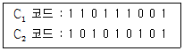
- 1
- 4
- 5
- 6
(정답률: 알수없음)
64. HDLC 전송 제어 프로토콜에 대한 설명 중 적합하지 않은 것은?
- 데이터 통신망에 많이 이용되는 전송제어 프로토콜 중의 하나이다.
- 비트 전송을 기본으로 한 전송 제어 프로토콜이다.
- OSI 7계층 중 계층 2에 관한 프로토콜의 일종이다.
- ISO에서 point-to-point 전송만을 지원키 위해 제안된 프로토콜이다.
(정답률: 알수없음)
65. 신호 f(t) = 3cos60πt+2cos100πt 를 표본화 하였을 때, 나이키스트(Nyquist)표본화 간격은 몇 ㎳ 인가?
- 1
- 5
- 10
- 20
(정답률: 알수없음)
66. 재생중계기의 3R 기능에 해당되지 않는 것은?
- Reshaping
- Regeneration
- Reduction
- Retiming
(정답률: 알수없음)
67. 다음 중 프레임 동기를 맞추기 위해 사용되는 기법은?
- Costas
- PLL(Phase Lock Loop)
- 펄스 타이밍(Pulse Stuffing)
- 펄스 쉐이핑(Pulse Shaping)
(정답률: 40%)
68. 통신 프로토콜의 기본요소가 아닌 것은?
- 구문(Syntax)
- 의미(semantics)
- 시간(timing)
- 포맷(format)
(정답률: 알수없음)
69. AMI부호에서의 "0"이 연속되는 것을 방지하기 위해 사용되는 부호는?
- 지연변조
- 고밀도 바이폴라
- 복극펄스
- CMI
(정답률: 알수없음)
70. FDM 다중통신과 비교하여 PCM 다중통신의 특징으로 적합하지 않은 것은?
- 정보량이 많다.
- 전송품질이 양호하다.
- 고가의 여파기가 필요하고 장치가 크다.
- 전송로의 잡음이나 누화 등의 영향이 적다.
(정답률: 50%)
71. HDLC 전송제어에서 사용하는 동작 모드가 아닌 것은?
- 정규응답모드(NRM)
- 초기 모드(IM)
- 비동기 평형모드(ABM)
- 비동기 응답모드(ARM)
(정답률: 알수없음)
72. 위성체는 크게 페이로드 시스템(payload system)과 버스서브 시스템(bus-sub system)으로 구성된다. 다음 중 버스서브 시스템에 해당되지 않는 것은?
- 자세제어계
- 열제어계
- 트랜스폰더
- 전력계
(정답률: 알수없음)
73. 다음 중 동축케이블의 특성으로 적합하지 않은 것은?
- 특성임피던스는 주파수에 따라 크게 변하지 않는다.
- 장거리 전송에서 중계소의 무인화가 불가능하다.
- 고주파 영역에서 누와는 거의 문제되지 않는다.
- 위상정수는 주파수에 비례하고 감쇠량은 주파수 제곱근에 비례한다.
(정답률: 알수없음)
74. HDLC에서 1바이트의 정보를 전송하기 위해 필요한 프레임의 최소 길이는 몇 바이트인가?
- 5
- 6
- 7
- 8
(정답률: 알수없음)
75. 다중모드 광케이블에서 발생하는 분산으로 가장 적합한 것은?
- 색분산
- 모드분산
- 색분산, 모드분산
- 도파로분산
(정답률: 알수없음)
76. 병렬전송과 비교하여 직렬전송에 대한 설명 중 적합하지 않은 것은?
- 전송속도가 느리다.
- 직병렬 변환회로가 필요하다.
- 전송로 비용이 저렴하다.
- 주로 근거리 전송에 사용된다.
(정답률: 알수없음)
77. 전송하려는 데잍를 다항식 형태로 표현한 것을 P(X)라 하면 완전한 CRC코드는 어떻게 표현되는가? (단, P(X) = 입력데이터의 다항식 표현)
- 생성다항식의 최저차항*P(X) - 패리티 비트
- 생성다항식의 최저차항*P(X) + 패리티 비트
- 생성다항식의 최고차항*P(X) - 패리티 비트
- 생성다항식의 최고차항*P(X) + 패리티 비트
(정답률: 알수없음)
78. 다음 중 OSI 7계층 참조 모델에서 계층 표현의 중요기능에 해당되지 않는 것은?
- 형식변환
- 암호화
- 데이터압축
- 경로선택
(정답률: 알수없음)
79. 광섬유 케이블에서 주로 발생하는 손실의 종류로 적합하지 않은 것은?
- 산란손실
- 흡수손실
- 누화손실
- 마이크로 벤딩 손실
(정답률: 알수없음)
80. PCM에서 ISI를 측정하기 위해 sys pattern을 이용하는데 눈을 뜬 상하의 높이는 무엇을 의미하는가?
- ISI 간섭없이 수신파를 sampling 할 수 있는 주기
- 시스템 감도
- 잡음의 여유도
- 변조도
(정답률: 알수없음)
5과목: 전자계산기일반 및 정보통신설비기준
81. 입ㆍ출력 채널에 관한 설명 중 옳은 것은?
- 멀티플렉서 채널은 속도가 빠른 장치에 연결되는 채널 형태이다.
- 셀렉터 채널은 속도가 느린 장치에 연결되는 채널형태이다.
- 블록멀티플렉서 채널은 멀티플렉서 채널과 셀렉터 채널을 결합한 형태이다.
- 채널은 입ㆍ출력장치가 작동 줄일 때마다 중앙처리장치의 지시를 받아 동작한다.
(정답률: 34%)
82. 범용 레지스터보다 실수용 레지스터가 더 큰 이유는?
- 계산과정에서 정수와 실수는 계산방식이 다르기 때문에
- 실수는 정수보다 자릿수가 크기 때문에
- 소수부분의 계산에서 정확도를 높이기 위하여
- 실수는 정수보다 계산속도가 늦기 때문에
(정답률: 16%)
83. 데이터가 발생하는 시점에서 즉시 처리하여 그 결과를 출력하거나 요구에 대해 응답하는 방식은?
- batch processing
- random processing
- real time processing
- sequential processing
(정답률: 알수없음)
84. 가상메모리(Virtual memory)에서 페이지폴트(page fault)가 일어났을 때 메인메모리(Main memory)내의 가장 오래된 페이지와 교환하는 것은?
- FIFO
- LRU
- LFU
- NUR
(정답률: 알수없음)
85. DMA에 의한 입ㆍ출력에 관한 설명 중 가장 옳은 것은?
- 소형 마이크로프로세서에만 가능하다.
- 중앙처리장치와 관계없이 자료를 직접 기억장치에 입ㆍ출력한다.
- 일반적으로 속도가 느린 입ㆍ출력장치에 대하여 사용된다.
- DMA가 입ㆍ출력을 수행할 때는 중앙처리장치는 다른 일을 수행할 수 없다.
(정답률: 알수없음)
86. 다음 주소 지정 방식 중 기억 장치를 가장 많이 액세스(access)해야 하는 방식은?
- 직접 주소 지정 방식
- 상대 주소 지정 방식
- 간접 주소 지정 방식
- 인덱스 주소 지정 방식
(정답률: 알수없음)
87. 다음 중 중앙처리장치(CPU)에 해당하지 않는 것은?
- 제어장치
- 산술논리연산장치(ALU)
- 주기억장치(RAM)
- 레지스터
(정답률: 알수없음)
88. 자료 구조의 선형 구조 표현에 대한 설명으로 트린 것은?
- 선형리스트는 여러 개의 데이터를 순서대로 나열하는 단순한 형태로 가장 많이 사용된다.
- 스택은 제일 나중에 들어온 원소가 제일 먼저 삭제되는 특성을 가지고 있어 LIFO 리스트라 한다.
- 큐는 가장 먼저 삽입된 데이터가 가장 먼저 삭제되는 특성을 가지고 있어 선입선출 리스트라 한다.
- 데크는 스택의 변형으로 연속적인 리스트 원소들을 연결해주는 포인터를 사용하는 리스트이다.
(정답률: 알수없음)
89. 다음 중 운영체제에 해당하지 않은 것은?
- UNIX
- PL/1
- LINUX
- Windows ME
(정답률: 알수없음)
90. 10진수 (20)10을 2진수, 8진수 및 16진수로 각각 옳게 표현한 것은?
- (010000)2, (24)8, (A4)16
- (010000)2, (20)8, (20)16
- (010100)2, (24)8, (20)16
- (010100)2, (24)8, (14)16
(정답률: 알수없음)
91. 다음 중 정보통신공사업의 등록을 할 수 있는 자는?
- 금치산자
- 한정치산자
- 파산선고를 받고 복권되지 아니한 자
- 정보통신공사업법 규정에 위반하여 벌금형의 선고를 받고 3년이 경과한 자
(정답률: 알수없음)
92. 국가기관 ㆍ 지방자치단체 등의 정보화촉진 등을 지원하고 정보화관련 정책개발을 지원하기 위하여 설립한 기관은?
- 정보통신정책연구원
- 한국정보통신기술협회
- 한국정보통신연합회
- 한국정보사회진흥원
(정답률: 알수없음)
93. "전기통신설비의 기술수준에 관한 규칙"의 제정은?
- 법률로 정한다.
- 대통령령으로 정한다.
- 정보통신부령으로 정한다.
- KT(한국통신) 이용약관으로 정한다.
(정답률: 알수없음)
94. 다음 ( )안에 들어가 내용으로 가장 적합한 것은?
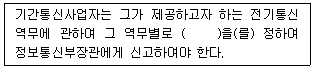
- 사규
- 이용규정
- 이용방법
- 이용약관
(정답률: 알수없음)
95. 정보통신부장관이 전기통신기본계획을 수립함에 있어 포함되지 않아도 되는 사항은?
- 전기통신의 이용의 효율화에 관한 사항
- 전기통신의 질서 유지에 관한 사항
- 전기통신사업에 관한 사항
- 자가통신설비의 설치 및 운용에 관한 사항
(정답률: 알수없음)
96. "단말장치"의 정의로 가장 적합한 것은?
- 전기통신망에 접속되는 단말기기 및 그 부속설비를 말한다.
- 통화회선에 접속하는 전화교환기, 변복조기 등을 말한다.
- 전기통신설비와 접속하기 위하여 이용자가 설치하는 짹, 플러그, 버턴 등을 말한다.
- 정보통신에 이용되는 정보통신기기 본체와 이에 부속되는 입출력장치 등 기타의 기기르 말한다.
(정답률: 알수없음)
97. 기간통신사업자로부터 전기통신회선설비를 임차하여 기간통신역무외의 전기통신역무를 제공하는 사업은?
- 별정통신사업
- 자가통신사업
- 부가통신사업
- 임차통신사업
(정답률: 알수없음)
98. 정보통신공사업의 등록 신청시 첨부하는 서류가 아닌것은?
- 기업진단보고서
- 사무실 보유를 증명하는 서류
- 정보통신기술자격자의 명단
- 정보통신공사용 장비 명세서
(정답률: 알수없음)
99. 기간통신사업자가 전기통신설비의 설치ㆍ보전을 위한 측량ㆍ조사 등을 위하여 타인의 주거용 건물에 출입하고자 할 때 그 절차로 가장 적합한 것은?
- 미리 통고만 했으면 승낙 여부와 무관하다.
- 출입시 신분증표를 관계인에게 제시하면 된다.
- 먼저 거주자의 승낙을 얻어야 한다.
- 사용목적과 사용기간을 통고하면 언제든지 출입할 수 있다.
(정답률: 알수없음)
100. 다음 중 정보통신공사 감리원의 업무 범위가 아닌 것은?
- 하도급에 대한 타당성 검토
- 공사계획 및 공정표의 작성
- 공사업자가 작성한 시공 상세도면의 검토ㆍ확인
- 사용자재의 규격 및 적합성에 관한 검토ㆍ확인
(정답률: 알수없음)